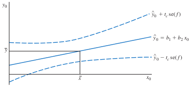
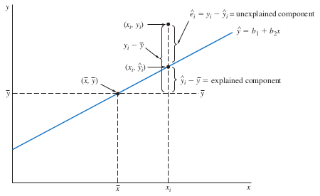
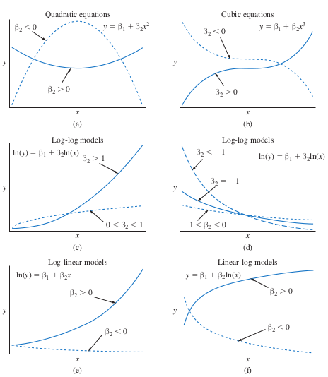

预测、拟合优度和建模问题
预测（prediction）就是给定解释变量\(x\)的某个值，对未知的被解释变量\(y\)的值的预报。\(y\)的未知值可能处于的范围称为预测区间（prediction interval）。考虑\(y\)的样本值与其预测值之间相关性，给出一个拟合优度的度量，称为\(R^2\)。对样本中的每一个观测，预测值与实际值之间的差称为残差（residual）。基于残差构建的诊断测度用来检查回归分析中所用函数形式的正确性，并给出模型假设正确性的线索。
最小二乘预测
给定SR-SR6，对某个\(x_0\)，我们要预测相应的\(y_0\)。假定\(x_0\)和\(y_0\)具有与模型相同的关系，即 \[y_0 = \beta_1 + \beta_2 x_0 + e_0\] 其中，\(e_0\)为随机误差。假定\(E(y_0)=\beta_1+beta_2x_0\)，\(E(e_0)=0\)，\(\mathrm{var}(e_0)=\sigma^2\)，\(\mathrm{cov}(e_0,e_i)=0,i=1,2,\ldots,N\)。由拟合回归线可得到\(y_0\)的最小二乘预测： \[\hat{y}_0=b_1+b_2 x_0\] 因为\(b_i\)随机，因此\(\hat{y}_0\)也是随机变量，定义预测误差为 \[f=y_0-\hat{y}_0=(\beta_1+\beta_2 x_0+e_0)-(b_1+b_2 x_0)\] 我们期望预测误差比较小。容易发现，\(E(f)=0\)，意味着\(\hat{y}_0\)是\(y_0\)的无偏估计。而且，可以证明，当SR1-SR5成立时，\(\hat{y}_0\)是\(y_0\)的最佳线性无偏预测（BLUP）。预测误差的方差为： \[\mathrm{var}(f)=\sigma^2\left[1+\frac1N+\frac{(x_0-\bar{x})^2}{\sum(x_i-\bar{x})^2}\right]\] 由上式可以考察影响预测误差方差的因素，有些因素与前面的估计模型类似，一个新的因子是\((x_0-\bar{x})^2\)，度量\(x_0\)的离差，这意味着我们在具有较多样本信息的区域能作出更好的预测。实践中，我们用\(\hat{\sigma}^2\)代替\(\sigma^2\)，得到估计方差： \[\widehat{\mathrm{var}(f)}=\hat{\sigma}^2\left[1+\frac1N+\frac{(x_0-\bar{x})^2}{\sum(x_i-\bar{x})^2}\right]\] 取平方根，得到预测标准误（standard error of the forecast）： \[\mathrm{se}(f)=\sqrt{\widehat{\mathrm{var}(f)}}\] 从而，预测区间（prediction interval）为： \[\hat{y}_0\pm t_c\mathrm{se}(f)\] 从\(\mathrm{var}(f)\)表达式可知，\(x_0\)离均值\(\bar{x}\)越远，预测可靠性越差，亦即预测区间越大。下图说明了不同\(x_0\)的点预测和区间预测之间的关系。

看食物支出的例子。当收入\(x_0=20\)，可以预测食物支出为： \[\hat{y}_0=83.4160+10.2096(20)=287.6089\] 容易得到，预测区间为\([104.1323,471.0854]\)。可见，预测区间很宽，表明此时的点预测并不可靠，即使\(x_0\)离均值还不算远。如果增加样本，可能会稍微改进估计和预测效果。但是，注意到这个例子中，误差方差和预测方差的估计很接近，表明预测的不确定性主要来自模型的不确定性。这并不奇怪，因为我们现在仅仅基于一个变量来预测本来非常复杂的家庭行为。 ## 拟合优度 我们将\(y_i\)分解为可解释部分和不可解释部分： \[y_i = E(y_i) + e_i\] 尽管这两个部分都是不可观测的，但因为系数可以估计，上式可以写成： \[y_i = \hat{y}_i + \hat{e}_i\] 其中，\(\hat{y}_i=b_1+b_2x\)，\(\hat{e}_i=y_i-\hat{y}_i\)。 注意到，最小二乘拟合回归线经过样本均值点。将上式两边减去\(\bar{y}\)，可得： \[y_i-\bar{y}=(\hat{y}_i-\bar{y})+\hat{e}_i\] 这表明，\(y_i\)的离差由两部分组成，一个是由回归模型解释的部分\(\hat{y}_i-\bar{y}\)，另一个是未解释部分\(\hat{e}_i\)。

样本值的总体变异性由\(y_i\)的离差平方和给出，类似的，它可以分解为两个部分： \[\sum(y_i-\bar{y})^2 = \sum(\hat{y}_i-\bar{y})^2 + \sum\hat{e}_i^2\] 上式用到了交叉项为0的事实（\(\sum(\hat{y}_i-\bar{y})\hat{e}_i=0\)）。 也就是说，离差平方和（总体变异）等于回归平方和（由模型解释）加上残差平方和（未由模型解释，由误差导致），一般写成： \[SST=SSR+SSE\] 由此，我们定义判别系数，用来衡量\(y\)由\(x\)解释部分的比例： \[R^2=\frac{SSR}{SST}=1-\frac{SSE}{SST}\] 简单线性回归模型中，\(R^2\)和样本相关系数\(r_{xy}\)之间有两个有趣的关系：
- \(r_{xy}^2=R^2\)
- \(R^2=r_{y\hat{y}}^2\)，因此，\(R^2\)度量样本数据与其预测值之间的线性关系，这就是为什么\(R^2\)称为拟合优度（goodness-of-fit）。这个结果在多元线性回归模型中也成立。
Modelling Issues
数据缩放（scaling）不会改变变量之间的关系，但会影响对系数估计值的解释和某些summary measures：
- 缩放\(x\)：
- 缩放\(y\)：
- 同比例缩放：
建模中需要考虑函数形式选择。经济理论告诉我们，食物支出呈现边际效应递减的特征，即收入较大时，斜率较小。简单线性模型其实是很灵活的，可以通过变量变换描述非线性关系。前面已经提过二次模型和对数-线性模型。下面看其他包含幂、对数的形式。基于quadratic、cubic和对数三类变换，就可以刻画很多形式。

变量变换后，对模型结果的解释就需要改变。以包含对数的模型为例：
- 双对数模型（log-log）：\(y\)和\(x\)都必须大于0，\(\beta_2\)表示弹性。在上图(c)中，若\(\beta_2>1\)，表示供给曲线；\(0<\beta_2<1\)表示生产曲线。(d)中，若\(\beta_2<0\)表示需求曲线。log-log模型中，弹性是常数，比较易于解释。
- 对数-线性模型（log-linear）：若\(beta_2>0\)，表示函数按递增速率递增；若\(\beta_2<0\)，表示函数按递减速率递减。
- 线性-对数模型（linear-log）：\(x\)增加1%，\(y\)变化_2/100单位。
选择函数形式，一般遵循以下指导原则：
- 符合经济理论对变量关系的描述；
- 足够灵活，对数据拟合比较好；
- 满足SR1-SR6，确保最小二乘估计具有希望的性质。
在设定模型时，我们可能选择了不合适的函数形式，即使不是如此，也有可能模型假设不满足。有两个方法可用来探测这类错误。第一种方法是检查回归结果，比如错误的符号，某个理论上重要的变量不显著，等等。第二种方法是分析最小二乘残差，来发现同方差（SR3）、序列不相关（SR4）和正态性（SR6）假设不满足。异方差通常出现在横截面分析中，而序列相关出现在时间序列分析中。后面章节会给出正规的检验方法，现在先看如何通过残差图来诊断这些错误。
如果模型假设都满足，残差图应该呈现一种随机模式，并无明显的趋势或形态。若存在某种特定的模式，很可能某些假设未满足或出现了其他问题。如果残差出现明显的二次函数形式，表明线性模型设定有误，忽略了曲线关系。当残差出现正负值交替的模式时，表明误差项存在某种相关性（SR4不满足）。由于残差图有时具有多种特征，往往不能据此得出确切的结论，难以分辨到底是模型设定问题，还是假设违背问题。尽管如此，残差图分析还是很常用。
如何检验模型的正态性？我们不能直接观测误差，只能从残差中分析。多数统计软件会给出残差的直方图，有的还给出关于残差的一些检验。当样本较小时，直方图并不是好的统计检验手段，因此，需要专门的统计量。常用的方法有Jarque-Bera检验，主要思想是看偏度是否显著不等于0、峰度是否显著不等于3，相应统计量为： \[JB=\frac{N}{6}\left(S^2+\frac{(K-3)^2}{4}\right)\] 当残差服从正态分布时，JB统计量服从两个自由度的卡方分布。
多项式模型
看一个例子。数据集为wa_wheat.dat。
Log-Linear模型
Log-Log模型